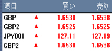
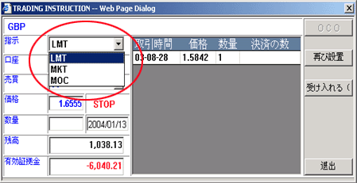

その他のタイプの注文を取引したい場合
取引プラットホームの中に以下のような取引タイプを受け入れられる。その機能を発揮するために会社の規定ややり方や市場相場に左右される。
ウィンドズに置かれている注文を実行させるために取引パネルにある項目コードをクリックしてください。
|

|
|
注文を成約させる
|
取引指令表示画面に選択メニューを引き張ると関連する条件に合わせる取引タイプのリストを提供される。

|
取引指令表示画面
|